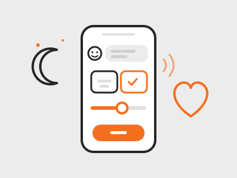

VIVADI – digitaler Begleiter für das Wohlbefinden
VIVADI ist ein digitaler Begleiter für kleine Schritte im Alltag, wenn es um die psychische Gesundheit und das eigene Wohlbefinden geht.
Er führt mit Ihnen ein ruhiges Gespräch, per Sprache oder Text, und schlägt Ihnen passende kurze Übungen vor. Er stellt keine Diagnosen und ersetzt keine Behandlung, sondern unterstützt im Alltag. Sie entscheiden jederzeit, welche Informationen Sie mit Ihrer Therapeutin oder Ihrem Therapeuten teilen.
Worum es geht
VIVADI begleitet Menschen mit kurzen, alltagstauglichen Übungen bei vielen Themen rund um das eigene Wohlbefinden. Jeden Tag nehmen Sie sich etwa fünf Minuten: Sie sagen, wie es Ihnen geht, VIVADI schlägt eine passende kurze Übung vor, und anschließend schauen Sie gemeinsam, was sie gebracht hat. Nach einer Woche gibt es einen Rückblick. Wenn Sie möchten, schicken Sie die Zusammenfassung selbst an Ihren Therapeuten.
Was Sie in der Demo sehen
Die aktuelle Demo zeigt den Start mit VIVADI, das Onboarding. Ein Begleiter spricht mit Ihnen und reagiert auf das, was Sie sagen. Sie können antworten, indem Sie Karten antippen, einen Regler bewegen, tippen oder einsprechen. Das Onboarding enthält:
- eine gesprochene Vorstellung von VIVADI und wie die Zusammenarbeit aussieht,
- Datenschutz und eine kurze Sicherheitsfrage,
- die Entscheidung, ob und wie Informationen an Ihren Therapeuten weitergegeben werden,
- eine kurze Einschätzung, aus der VIVADI Schwerpunkte ableitet (die Demo startet mit den Themen Stress und Schlaf, weitere folgen),
- Auswahlkarten zu Ihren Belastungen, einen Regler für die aktuelle Anspannung sowie Zeit und Erinnerungen,
- einen Überblick über den Tagesablauf und einen Ausblick auf die kommenden Wochen.
Hinweis
VIVADI ist ein Prototyp in Entwicklung und läuft mit einer erfundenen Testperson. Die Demo ist passwortgeschützt. VIVADI stellt keine Diagnosen und ersetzt keine ärztliche oder therapeutische Behandlung.
Zur Demo